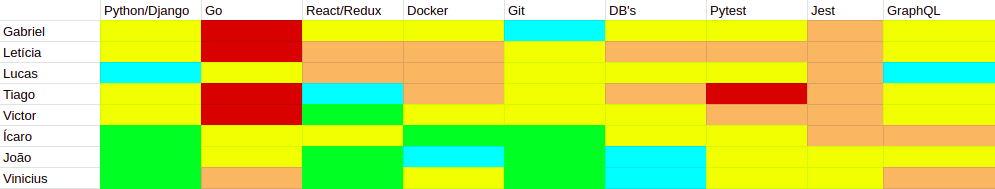

Resultados da Sprint 9
Informações básicas
| Pontuação | Valores |
|---|---|
| Planejada | 79 |
| Total entregue | 38 |
| Dívida técnica | 41 |
Issues
| Nome da issue | Pontos | Situação |
|---|---|---|
| Criar página de Ensaio | 13 | Fechada |
| O usuário não é redirecionado pra página de Login caso não esteja logado | 1 | Fechada |
| Acesso a página Sign up para todos os usuários | 1 | Fechada |
| Sempre é possível acessar a página de Login | 1 | Fechada |
| Refatorar o módulo calibração do frontend | 3 | Não fechada |
| Criar página de relações de calibração | 3 | Não fechada |
| Refatorar o módulo calibração do frontend | 3 | Não fechada |
| Criar página de relações de calibração | 8 | Não fechada |
| Refazer formulário de Comando | 5 | Fechada |
| Criar mecanismo para comandos seriais | 8 | Não fechada |
| Redefinir senha do usuário | 8 | Não fechada |
| Criar formulário de calibração de velocidade | 8 | Fechada |
| Usuário redirecionado para a tela de login ao atualizar a pagina | 1 | Fechada |
| Mover o upload de arquivo de calibração para página de calibração | 5 | Não fechada |
| Criar coleta inicial | 8 | Fechada |
| Criar página de configurações gerais da calibração | 3 | Não fechada |
Burndown

Velocity

Dailies
Em comum acordo, o grupo decidiu que por conta de haver muitos membros faltantes nas dailies presenciais, o reporte nesses casos iria ser feito por meio do Daily Bot no Slack e sendo assim, a necessidade de manter a lita de presença se tornou desnecessária.
Retrospectiva
Pontos Ruins
- EPS não parar de tabalhar para almoçar;
- Não fizemos hora da dica do Lucas até hoje;
- MDS não está conversando entre si;
- Fechando PR's na reunião de review;
- EPS não foi na reunião do Evandro, com exceção do Ícaro;
- Nosso slack não tem mais taco;
- Codeclimate/testes abaixaram;
- Falta de mão de obra;
- Trabalho de criptografia tmou muito tempo.
Pontos bons
- Tiago trabalhando muito!!;
- Lucas está se tornando back-end developer raiz, aprendendo Go e usando o Vim;
- Vinicius programou;
- Binário do Go foi feito;
- Go rodando com a interface gráfica;
- Reunião com o Evandro aconteceu;
- Ícaro é muito paciente no pareamento.
Melhorias
- Vinicius programar mais;
- Sair a comunicação do frontend com o Go usando MQTT.
Quadro de conhecimentos


Comentários do Scrum Master
Nessa sprint, o foco foi resolver uma grande quantidade de bugs e realizar algumas melhorias enquanto a parte local era desenvolvida, além de terminar alguns formulários restantes da parte de calibração. Em paralelo a isso, a página do ensaio foi feita e a coleta inicial dos dados vindos da placa foi finalizada. É importante ressaltar que, apesar da diminuição dos pontos entreges em relação a sprint passada, MDS atingiu um grau de maturidade muito bom e uma melhor visão em relação ao projeto, tomando iniciativa na criação e finalização das issues, apesar das outras matérias e problemas pessoais.